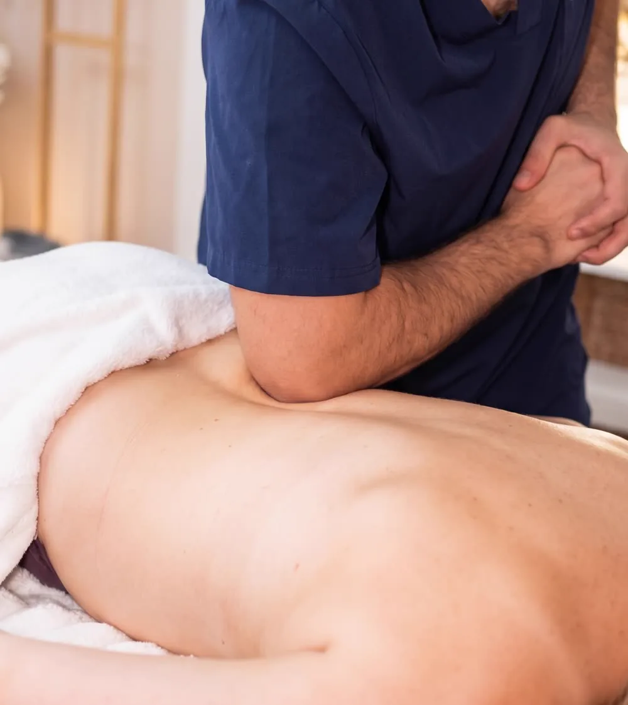

Office massage · Jeżyce, Poznań
Fifty minutes at our studio in Jeżyce, ul. Zeylanda 3/1, for everything that computer work overloads: the neck, the shoulder girdle, the upper back and the forearms. That last one is the area almost nobody remembers, and it is often the first to complain.

What it is
Eight hours in the same position loads a very predictable set of places: the base of the skull, the upper trapezius, the space between the shoulder blades and the forearms. This treatment covers all four, because working on one of them in isolation usually brings relief for about two days.
The forearms are the most often overlooked part. The mouse and keyboard load them all day, and tight wrist extensors can cause pain around the elbow and make it harder for the shoulders to let go. That is why we take them as seriously as the neck.

Benefits
For the neck and shoulders that creep up towards your ears by the evening.
Work on the forearms that the mouse and keyboard overload.
When your desk is sometimes the kitchen table and your office chair is an ordinary chair.
Once a month is enough to stop tension from building up.
How it works
How many hours a day at a screen, where it feels tightest, whether you get headaches.
We start where tension is most noticeable and lets go most easily.
The upper back, then the wrist extensors - the area that usually gets skipped.
Two or three things to do at your desk so the effect lasts longer.
Times & prices
The office massage has one length, because its scope is fixed: four areas in fifty minutes. If you want to work on just one area or the whole back, the shorter options on the back and neck page are a better choice.
Contraindications
Pain radiating into the arm, numb fingers or a weaker grip are not a job for massage - start with a doctor or physiotherapist and come back to us with their advice. If neck tension keeps returning despite regular visits, consider a deep tissue massage.
FAQ
In scope. A back massage covers just the back, while the office massage adds the neck, the shoulder girdle and the forearms - the full set of areas that one particular way of spending the day overloads. It takes 50 minutes, so it sits between a short neck massage and a full hour on the back.
Because the mouse and keyboard load them all day and almost nobody thinks about them. Tight wrist extensors can cause pain around the elbow and can be one of the reasons the shoulders will not let go. It is the most overlooked area for people with desk jobs.
We do the treatment at our own studio in Jeżyce, ul. Zeylanda 3. If you are interested in massage for your team at your company, message or call us and we will see what we can organise.
With computer work, about once a month works well. If the tension is strong, start with two visits two weeks apart and then move to maintenance. Regularity matters more here than the length of a single session.
With fever or infection, a fresh neck or spine injury, thrombosis, and in the first trimester of pregnancy without asking us first. Pain radiating into the arm, numb fingers or a weaker grip need a doctor or physiotherapist first - that is not a job for massage.
Book online · We speak English
Most foreign guests message us on WhatsApp - write in English and we will reply in English.
Contact · Booking · We speak English
We use necessary cookies to make the site work. With your consent we would also like to use Google Analytics to see which pages are useful. You can change your choice at any time. Details in our privacy policy (in Polish).
Needed for the site to work and to remember your choice. They cannot be switched off.
Google Analytics - aggregated visit statistics. Off by default.